array([[ 0, 1, 2, 3],
[ 4, 5, 6, 7],
[ 8, 9, 10, 11]])Recurrent Neural Networks
ACTL3143 & ACTL5111 Deep Learning for Actuaries
Patrick Laub
Tensors & Time Series
Lecture Outline
Tensors & Time Series
Some Recurrent Structures
Recurrent Neural Networks
CoreLogic Hedonic Home Value Index
Splitting time series data
Predicting Sydney House Prices
Predicting Multiple Time Series
Shapes of data
Illustration of tensors of different rank.
Source: Paras Patidar (2019), Tensors — Representation of Data In Neural Networks, Medium article.
The axis argument in numpy
Starting with a (3, 4)-shaped matrix:
The return value’s rank is one less than the input’s rank.
Important
The axis parameter tells us which dimension is removed.
Using axis & keepdims
With keepdims=True, the rank doesn’t change.
The rank of a time series
Say we had n observations of a time series x_1, x_2, \dots, x_n.
This \mathbf{x} = (x_1, \dots, x_n) would have shape (n,) & rank 1.
If instead we had a batch of b time series’
\mathbf{X} = \begin{pmatrix} x_7 & x_8 & \dots & x_{7+n-1} \\ x_2 & x_3 & \dots & x_{2+n-1} \\ \vdots & \vdots & \ddots & \vdots \\ x_3 & x_4 & \dots & x_{3+n-1} \\ \end{pmatrix} \,,
the batch \mathbf{X} would have shape (b, n) & rank 2.
Multivariate time series
| t | x | y |
|---|---|---|
| 0 | x_0 | y_0 |
| 1 | x_1 | y_1 |
| 2 | x_2 | y_2 |
| 3 | x_3 | y_3 |
Say n observations of the m time series, would be a shape (n, m) matrix of rank 2.
In Keras, a batch of b of these time series has shape (b, n, m) and has rank 3.
Note
Use \mathbf{x}_t \in \mathbb{R}^{1 \times m} to denote the vector of all time series at time t. Here, \mathbf{x}_t = (x_t, y_t).
Some Recurrent Structures
Lecture Outline
Tensors & Time Series
Some Recurrent Structures
Recurrent Neural Networks
CoreLogic Hedonic Home Value Index
Splitting time series data
Predicting Sydney House Prices
Predicting Multiple Time Series
Recurrence relation
A recurrence relation is an equation that expresses each element of a sequence as a function of the preceding ones. More precisely, in the case where only the immediately preceding element is involved, a recurrence relation has the form
u_n = \psi(n, u_{n-1}) \quad \text{ for } \quad n > 0.
Example: Factorial n! = n (n-1)! for n > 0 given 0! = 1.
Source: Wikipedia, Recurrence relation.
Diagram of an RNN cell
The RNN processes each data in the sequence one by one, while keeping memory of what came before.
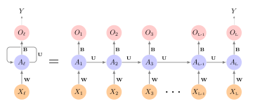Schematic of a simple recurrent neural network. E.g. SimpleRNN, LSTM, or GRU.
Source: James et al (2022), An Introduction to Statistical Learning, 2nd edition, Figure 10.12.
A SimpleRNN cell.

Diagram of a SimpleRNN cell.
All the outputs before the final one are often discarded.
Source: Christopher Olah (2015), Understanding LSTM Networks, Colah’s Blog.
SimpleRNN
Say each prediction is a vector of size d, so \mathbf{y}_t \in \mathbb{R}^{1 \times d}.
Then the main equation of a SimpleRNN, given \mathbf{y}_0 = \mathbf{0}, is
\mathbf{y}_t = \psi\bigl( \mathbf{x}_t \mathbf{W}_x + \mathbf{y}_{t-1} \mathbf{W}_y + \mathbf{b} \bigr) .
Here, \begin{aligned} &\mathbf{x}_t \in \mathbb{R}^{1 \times m}, \mathbf{W}_x \in \mathbb{R}^{m \times d}, \\ &\mathbf{y}_{t-1} \in \mathbb{R}^{1 \times d}, \mathbf{W}_y \in \mathbb{R}^{d \times d}, \text{ and } \mathbf{b} \in \mathbb{R}^{d}. \end{aligned}
SimpleRNN (in batches)
Say we operate on batches of size b, then \mathbf{Y}_t \in \mathbb{R}^{b \times d}.
The main equation of a SimpleRNN, given \mathbf{Y}_0 = \mathbf{0}, is \mathbf{Y}_t = \psi\bigl( \mathbf{X}_t \mathbf{W}_x + \mathbf{Y}_{t-1} \mathbf{W}_y + \mathbf{b} \bigr) . Here, \begin{aligned} &\mathbf{X}_t \in \mathbb{R}^{b \times m}, \mathbf{W}_x \in \mathbb{R}^{m \times d}, \\ &\mathbf{Y}_{t-1} \in \mathbb{R}^{b \times d}, \mathbf{W}_y \in \mathbb{R}^{d \times d}, \text{ and } \mathbf{b} \in \mathbb{R}^{d}. \end{aligned}
Remember, \mathbf{X} \in \mathbb{R}^{b \times n \times m}, \mathbf{Y} \in \mathbb{R}^{b \times d}, and \mathbf{X}_t is equivalent to X[:, t, :].
Simple Keras demo
Keras’ SimpleRNN
As usual, the SimpleRNN is just a layer in Keras.
from keras.layers import SimpleRNN
random.seed(1234)
model = Sequential([
SimpleRNN(output_size, activation="sigmoid")
])
model.compile(loss="binary_crossentropy", metrics=["accuracy"])
hist = model.fit(X, y, epochs=500, verbose=False)
model.evaluate(X, y, verbose=False)[3.1845884323120117, 0.5]The predicted probabilities on the training set are:
SimpleRNN weights
[array([[0.68],
[0.21]], dtype=float32),
array([[0.49]], dtype=float32),
array([-0.51], dtype=float32)]LSTM internals


Source: Christopher Olah (2015), Understanding LSTM Networks, Colah’s Blog.
GRU internals

Diagram of a GRU cell.
Source: Christopher Olah (2015), Understanding LSTM Networks, Colah’s Blog.
Recurrent Neural Networks
Lecture Outline
Tensors & Time Series
Some Recurrent Structures
Recurrent Neural Networks
CoreLogic Hedonic Home Value Index
Splitting time series data
Predicting Sydney House Prices
Predicting Multiple Time Series
Basic facts of RNNs
- A recurrent neural network is a type of neural network that is designed to process sequences of data (e.g. time series, sentences).
- A recurrent neural network is any network that contains a recurrent layer.
- A recurrent layer is a layer that processes data in a sequence.
- An RNN can have one or more recurrent layers.
- Weights are shared over time; this allows the model to be used on arbitrary-length sequences.
Applications
- Forecasting: revenue forecast, weather forecast, predict disease rate from medical history, etc.
- Classification: given a time series of the activities of a visitor on a website, classify whether the visitor is a bot or a human.
- Event detection: given a continuous data stream, identify the occurrence of a specific event. Example: Detect utterances like “Hey Alexa” from an audio stream.
- Anomaly detection: given a continuous data stream, detect anything unusual happening. Example: Detect unusual activity on the corporate network.
Input and output sequences

Categories of recurrent neural networks: sequence to sequence, sequence to vector, vector to sequence, encoder-decoder network.
Source: Aurélien Géron (2019), Hands-On Machine Learning with Scikit-Learn, Keras, and TensorFlow, 2nd Edition, Chapter 15.
Input and output sequences
- Sequence to sequence: Useful for predicting time series such as using prices over the last N days to output the prices shifted one day into the future (i.e. from N-1 days ago to tomorrow.)
- Sequence to vector: ignore all outputs in the previous time steps except for the last one. Example: give a sentiment score to a sequence of words corresponding to a movie review.
Input and output sequences
- Vector to sequence: feed the network the same input vector over and over at each time step and let it output a sequence. Example: given that the input is an image, find a caption for it. The image is treated as an input vector (pixels in an image do not follow a sequence). The caption is a sequence of textual description of the image. A dataset containing images and their descriptions is the input of the RNN.
- The Encoder-Decoder: The encoder is a sequence-to-vector network. The decoder is a vector-to-sequence network. Example: Feed the network a sequence in one language. Use the encoder to convert the sentence into a single vector representation. The decoder decodes this vector into the translation of the sentence in another language.
Recurrent layers can be stacked.

Deep RNN unrolled through time.
Source: Aurélien Géron (2019), Hands-On Machine Learning with Scikit-Learn, Keras, and TensorFlow, 2nd Edition, Chapter 15.
CoreLogic Hedonic Home Value Index
Lecture Outline
Tensors & Time Series
Some Recurrent Structures
Recurrent Neural Networks
CoreLogic Hedonic Home Value Index
Splitting time series data
Predicting Sydney House Prices
Predicting Multiple Time Series
Australian House Price Indices

Percentage changes
| Brisbane | East_Bris | North_Bris | West_Bris | Melbourne | North_Syd | Sydney | |
|---|---|---|---|---|---|---|---|
| Date | |||||||
| 1990-02-28 | 0.03 | -0.01 | 0.01 | 0.01 | 0.00 | -0.00 | -0.02 |
| 1990-03-31 | 0.01 | 0.03 | 0.01 | 0.01 | 0.02 | -0.00 | 0.03 |
| ... | ... | ... | ... | ... | ... | ... | ... |
| 2021-04-30 | 0.03 | 0.01 | 0.01 | -0.00 | 0.01 | 0.02 | 0.02 |
| 2021-05-31 | 0.03 | 0.03 | 0.03 | 0.03 | 0.03 | 0.02 | 0.04 |
376 rows × 7 columns
Percentage changes

The size of the changes
Brisbane 0.005496
East_Bris 0.005416
North_Bris 0.005024
West_Bris 0.004842
Melbourne 0.005677
North_Syd 0.004819
Sydney 0.005526
dtype: float64
Splitting time series data
Lecture Outline
Tensors & Time Series
Some Recurrent Structures
Recurrent Neural Networks
CoreLogic Hedonic Home Value Index
Splitting time series data
Predicting Sydney House Prices
Predicting Multiple Time Series
Split without shuffling
num_train = int(0.6 * len(changes))
num_val = int(0.2 * len(changes))
num_test = len(changes) - num_train - num_val
print(f"# Train: {num_train}, # Val: {num_val}, # Test: {num_test}")# Train: 225, # Val: 75, # Test: 76
Subsequences of a time series
Keras has a built-in method for converting a time series into subsequences/chunks.
from keras.utils import timeseries_dataset_from_array
integers = range(10)
dummy_dataset = timeseries_dataset_from_array(
data=integers[:-3],
targets=integers[3:],
sequence_length=3,
batch_size=2,
)
for inputs, targets in dummy_dataset:
for i in range(inputs.shape[0]):
print([int(x) for x in inputs[i]], int(targets[i]))[0, 1, 2] 3
[1, 2, 3] 4
[2, 3, 4] 5
[3, 4, 5] 6
[4, 5, 6] 7Source: Code snippet in Chapter 10 of Chollet.
On time series splits
If you have a lot of time series data, then use:
from keras.utils import timeseries_dataset_from_array
data = range(20); seq = 3; ts = data[:-seq]; target = data[seq:]
nTrain = int(0.5 * len(ts)); nVal = int(0.25 * len(ts))
nTest = len(ts) - nTrain - nVal
print(f"# Train: {nTrain}, # Val: {nVal}, # Test: {nTest}")# Train: 8, # Val: 4, # Test: 5Training dataset
[0, 1, 2] 3
[1, 2, 3] 4
[2, 3, 4] 5
[3, 4, 5] 6
[4, 5, 6] 7
[5, 6, 7] 8Validation dataset
[8, 9, 10] 11
[9, 10, 11] 12Test dataset
[12, 13, 14] 15
[13, 14, 15] 16
[14, 15, 16] 17Adapted from: François Chollet (2021), Deep Learning with Python, Second Edition, Listing 10.7.
On time series splits II
If you don’t have a lot of time series data, consider:
Training dataset
[0, 1, 2] 3
[1, 2, 3] 4
[2, 3, 4] 5
[3, 4, 5] 6
[4, 5, 6] 7
[5, 6, 7] 8
[6, 7, 8] 9
[7, 8, 9] 10Validation dataset
[8, 9, 10] 11
[9, 10, 11] 12
[10, 11, 12] 13
[11, 12, 13] 14
[12, 13, 14] 15Test dataset
[13, 14, 15] 16
[14, 15, 16] 17
[15, 16, 17] 18
[16, 17, 18] 19Predicting Sydney House Prices
Lecture Outline
Tensors & Time Series
Some Recurrent Structures
Recurrent Neural Networks
CoreLogic Hedonic Home Value Index
Splitting time series data
Predicting Sydney House Prices
Predicting Multiple Time Series
Creating dataset objects
Converting Dataset to numpy
The Dataset object can be handed to Keras directly, but if we really need a numpy array, we can run:
The shape of our training set is now:
Converting the rest to numpy arrays:
A dense network
from keras.layers import Input, Flatten
random.seed(1)
model_dense = Sequential([
Input((seq_length, num_ts)),
Flatten(),
Dense(50, activation="leaky_relu"),
Dense(20, activation="leaky_relu"),
Dense(1, activation="linear")
])
model_dense.compile(loss="mse", optimizer="adam")
print(f"This model has {model_dense.count_params()} parameters.")
es = EarlyStopping(patience=50, restore_best_weights=True, verbose=1)
%time hist = model_dense.fit(X_train, y_train, epochs=1_000, \
validation_data=(X_val, y_val), callbacks=[es], verbose=0);This model has 3191 parameters.
Epoch 57: early stopping
Restoring model weights from the end of the best epoch: 7.
CPU times: user 2.9 s, sys: 298 ms, total: 3.2 s
Wall time: 2.89 sPlot the model
Assess the fits

Plotting the predictions
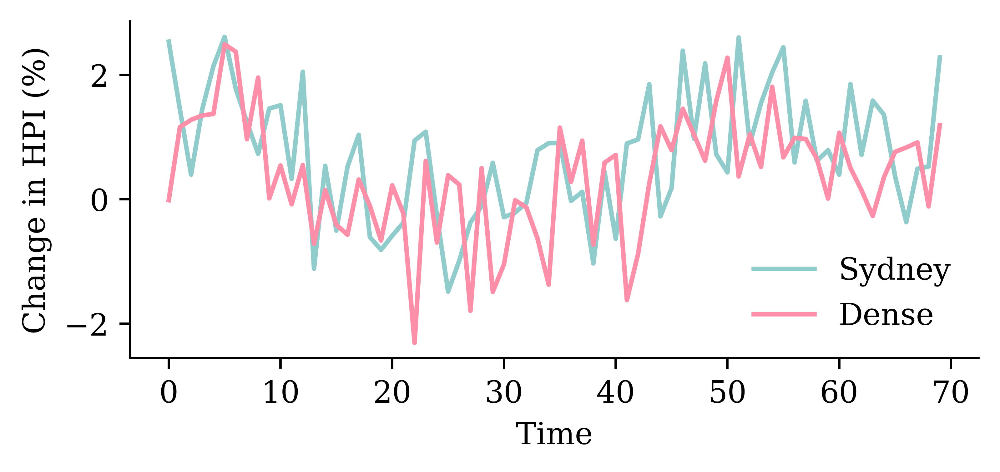A SimpleRNN layer
random.seed(1)
model_simple = Sequential([
Input((seq_length, num_ts)),
SimpleRNN(50),
Dense(1, activation="linear")
])
model_simple.compile(loss="mse", optimizer="adam")
print(f"This model has {model_simple.count_params()} parameters.")
es = EarlyStopping(patience=50, restore_best_weights=True, verbose=1)
%time hist = model_simple.fit(X_train, y_train, epochs=1_000, \
validation_data=(X_val, y_val), callbacks=[es], verbose=0);This model has 2951 parameters.
Epoch 62: early stopping
Restoring model weights from the end of the best epoch: 12.
CPU times: user 3.96 s, sys: 394 ms, total: 4.35 s
Wall time: 3.36 sAssess the fits
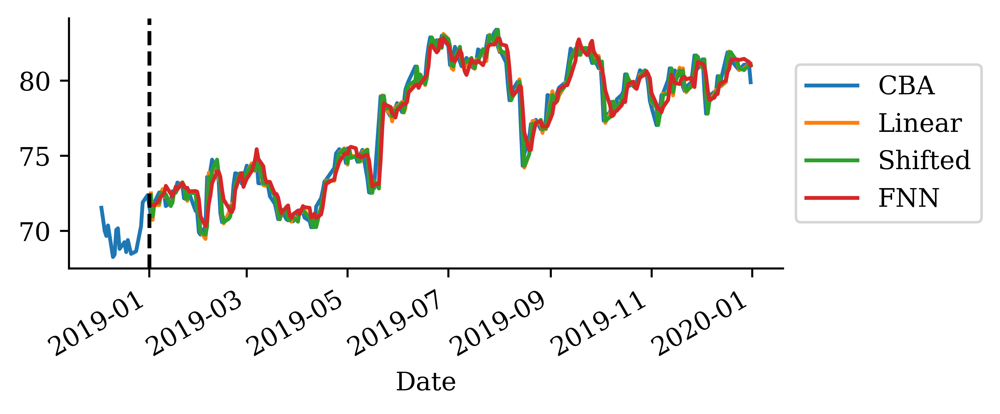Plot the model

Plotting the predictions
WARNING:tensorflow:5 out of the last 7 calls to <function TensorFlowTrainer.make_predict_function.<locals>.one_step_on_data_distributed at 0x78431434b4c0> triggered tf.function retracing. Tracing is expensive and the excessive number of tracings could be due to (1) creating @tf.function repeatedly in a loop, (2) passing tensors with different shapes, (3) passing Python objects instead of tensors. For (1), please define your @tf.function outside of the loop. For (2), @tf.function has reduce_retracing=True option that can avoid unnecessary retracing. For (3), please refer to https://www.tensorflow.org/guide/function#controlling_retracing and https://www.tensorflow.org/api_docs/python/tf/function for more details.A LSTM layer
from keras.layers import LSTM
random.seed(1)
model_lstm = Sequential([
Input((seq_length, num_ts)),
LSTM(50),
Dense(1, activation="linear")
])
model_lstm.compile(loss="mse", optimizer="adam")
es = EarlyStopping(patience=50, restore_best_weights=True, verbose=1)
%time hist = model_lstm.fit(X_train, y_train, epochs=1_000, \
validation_data=(X_val, y_val), callbacks=[es], verbose=0);Epoch 59: early stopping
Restoring model weights from the end of the best epoch: 9.
CPU times: user 4.52 s, sys: 489 ms, total: 5.01 s
Wall time: 3.78 sAssess the fits
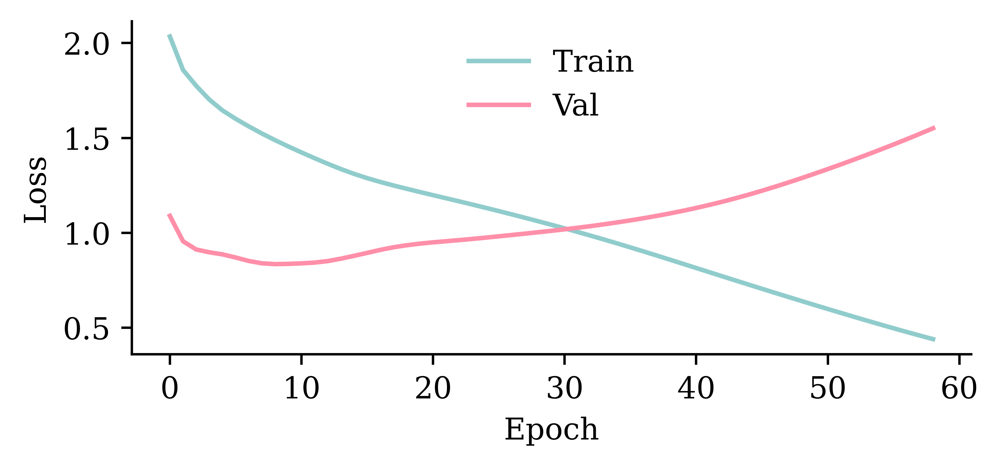Plotting the predictions
WARNING:tensorflow:6 out of the last 8 calls to <function TensorFlowTrainer.make_predict_function.<locals>.one_step_on_data_distributed at 0x78436c4d1120> triggered tf.function retracing. Tracing is expensive and the excessive number of tracings could be due to (1) creating @tf.function repeatedly in a loop, (2) passing tensors with different shapes, (3) passing Python objects instead of tensors. For (1), please define your @tf.function outside of the loop. For (2), @tf.function has reduce_retracing=True option that can avoid unnecessary retracing. For (3), please refer to https://www.tensorflow.org/guide/function#controlling_retracing and https://www.tensorflow.org/api_docs/python/tf/function for more details.
A GRU layer
from keras.layers import GRU
random.seed(1)
model_gru = Sequential([
Input((seq_length, num_ts)),
GRU(50),
Dense(1, activation="linear")
])
model_gru.compile(loss="mse", optimizer="adam")
es = EarlyStopping(patience=50, restore_best_weights=True, verbose=1)
%time hist = model_gru.fit(X_train, y_train, epochs=1_000, \
validation_data=(X_val, y_val), callbacks=[es], verbose=0)Epoch 57: early stopping
Restoring model weights from the end of the best epoch: 7.
CPU times: user 4.85 s, sys: 574 ms, total: 5.42 s
Wall time: 3.8 sAssess the fits
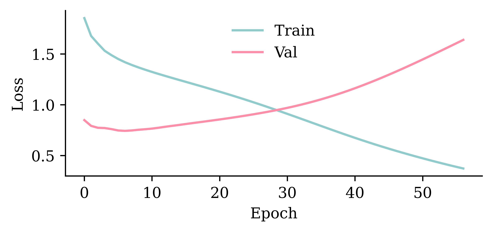Plotting the predictions
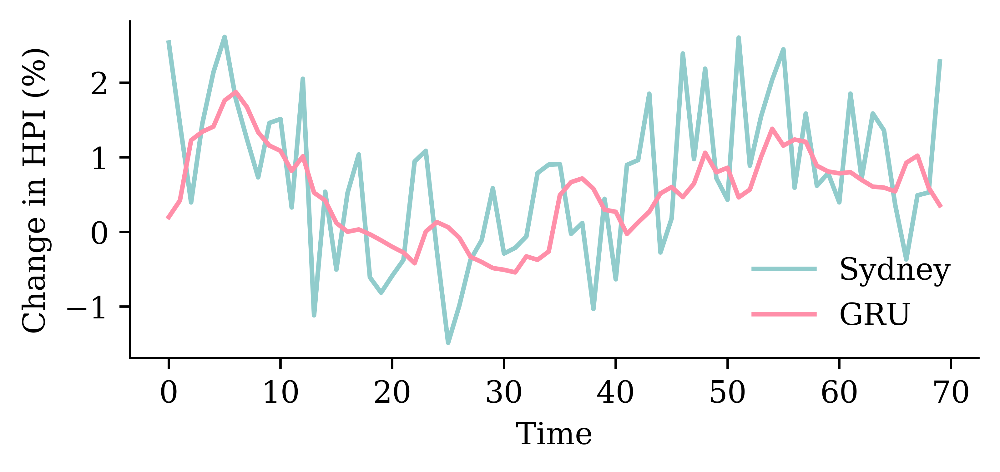Two GRU layers
random.seed(1)
model_two_grus = Sequential([
Input((seq_length, num_ts)),
GRU(50, return_sequences=True),
GRU(50),
Dense(1, activation="linear")
])
model_two_grus.compile(loss="mse", optimizer="adam")
es = EarlyStopping(patience=50, restore_best_weights=True, verbose=1)
%time hist = model_two_grus.fit(X_train, y_train, epochs=1_000, \
validation_data=(X_val, y_val), callbacks=[es], verbose=0)Epoch 56: early stopping
Restoring model weights from the end of the best epoch: 6.
CPU times: user 7.07 s, sys: 618 ms, total: 7.69 s
Wall time: 8.57 sAssess the fits
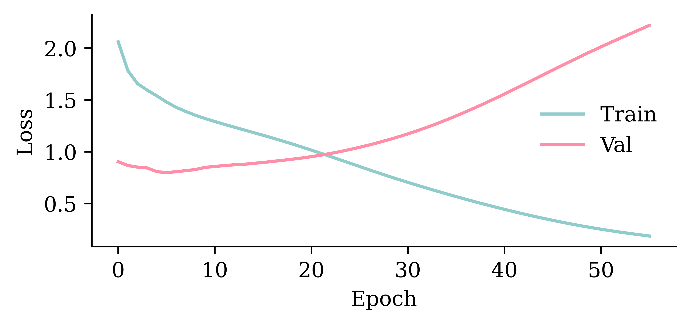Plotting the predictions
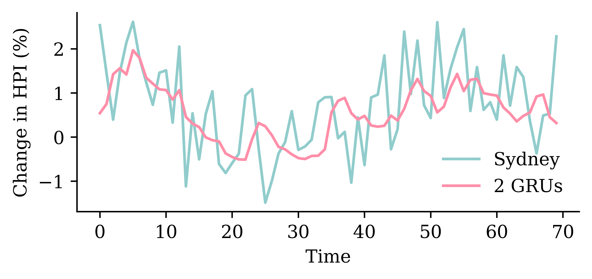Compare the models
| Model | MSE | |
|---|---|---|
| 1 | SimpleRNN | 1.250792 |
| 0 | Dense | 1.164461 |
| 2 | LSTM | 0.835326 |
| 4 | 2 GRUs | 0.798951 |
| 3 | GRU | 0.743510 |
The network with two GRU layers is the best.
Test set
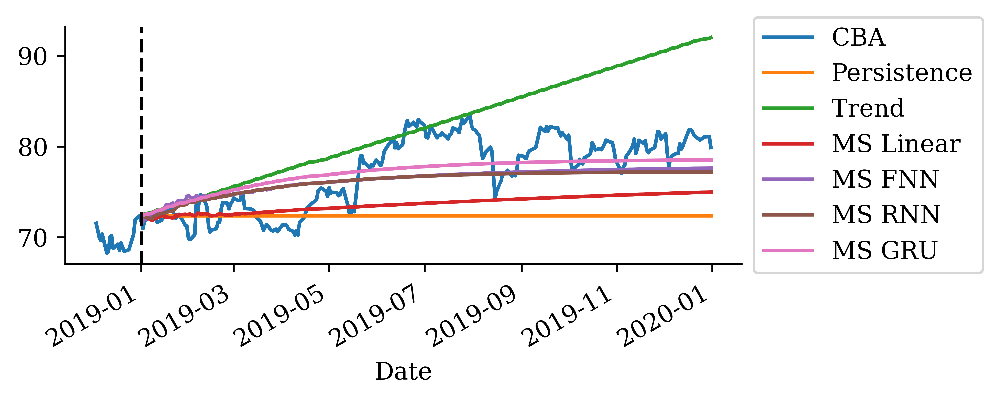Predicting Multiple Time Series
Lecture Outline
Tensors & Time Series
Some Recurrent Structures
Recurrent Neural Networks
CoreLogic Hedonic Home Value Index
Splitting time series data
Predicting Sydney House Prices
Predicting Multiple Time Series
Creating dataset objects
Change the targets argument to include all the suburbs.
Converting Dataset to numpy
The shape of our training set is now:
Converting the rest to numpy arrays:
A dense network
random.seed(1)
model_dense = Sequential([
Input((seq_length, num_ts)),
Flatten(),
Dense(50, activation="leaky_relu"),
Dense(20, activation="leaky_relu"),
Dense(num_ts, activation="linear")
])
model_dense.compile(loss="mse", optimizer="adam")
print(f"This model has {model_dense.count_params()} parameters.")
es = EarlyStopping(patience=50, restore_best_weights=True, verbose=1)
%time hist = model_dense.fit(X_train, y_train, epochs=1_000, \
validation_data=(X_val, y_val), callbacks=[es], verbose=0);This model has 3317 parameters.
Epoch 75: early stopping
Restoring model weights from the end of the best epoch: 25.
CPU times: user 3.84 s, sys: 346 ms, total: 4.19 s
Wall time: 7.21 sPlot the model
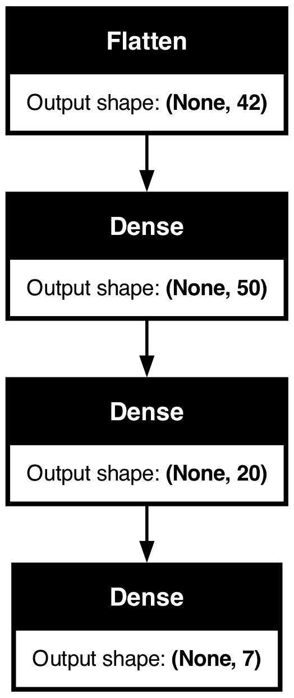Assess the fits
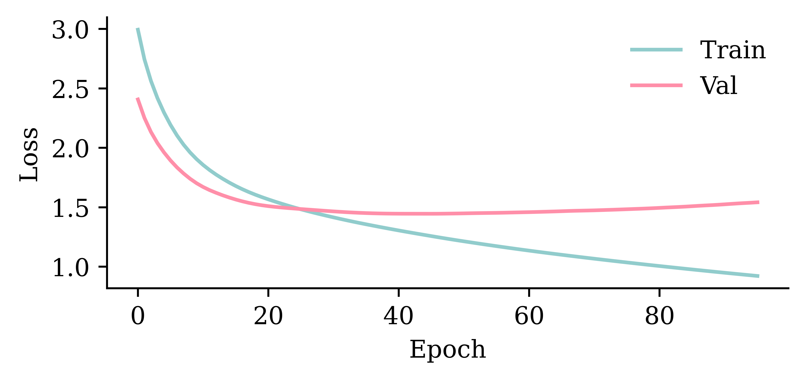Plotting the predictions
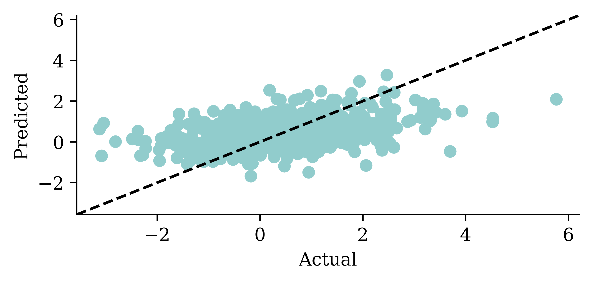
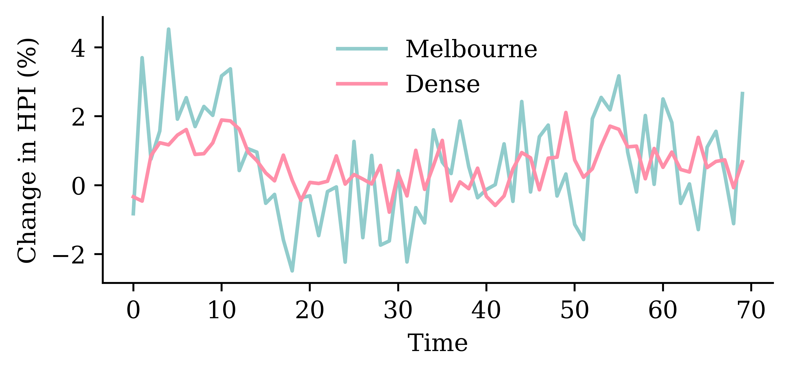
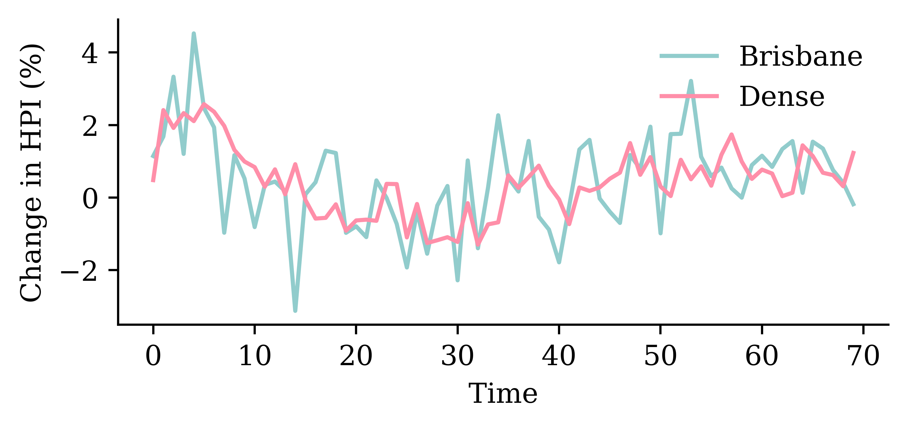
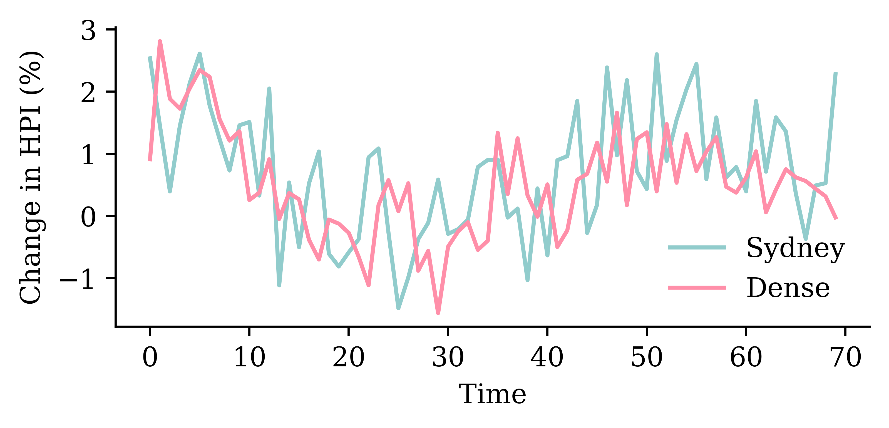
A SimpleRNN layer
random.seed(1)
model_simple = Sequential([
Input((seq_length, num_ts)),
SimpleRNN(50),
Dense(num_ts, activation="linear")
])
model_simple.compile(loss="mse", optimizer="adam")
print(f"This model has {model_simple.count_params()} parameters.")
es = EarlyStopping(patience=50, restore_best_weights=True, verbose=1)
%time hist = model_simple.fit(X_train, y_train, epochs=1_000, \
validation_data=(X_val, y_val), callbacks=[es], verbose=0);This model has 3257 parameters.
Epoch 70: early stopping
Restoring model weights from the end of the best epoch: 20.
CPU times: user 4.78 s, sys: 473 ms, total: 5.25 s
Wall time: 7.94 sAssess the fits
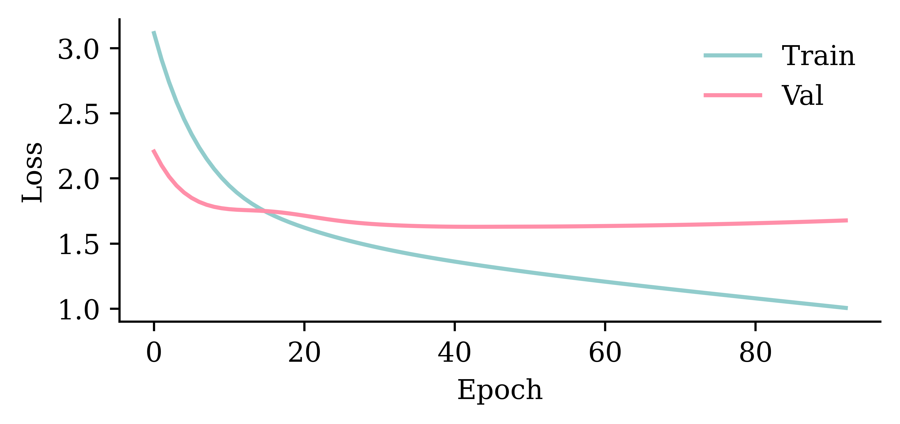Plot the model
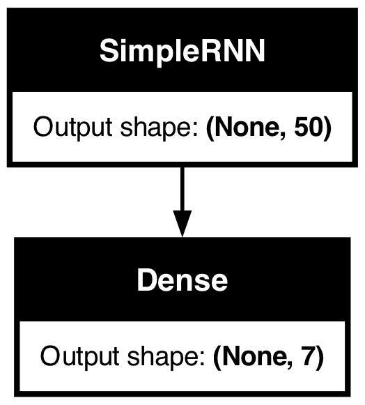Plotting the predictions


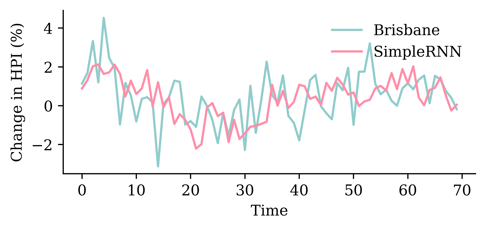
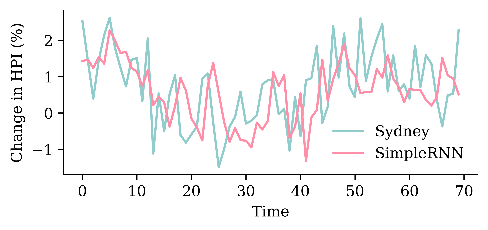
A LSTM layer
random.seed(1)
model_lstm = Sequential([
Input((seq_length, num_ts)),
LSTM(50),
Dense(num_ts, activation="linear")
])
model_lstm.compile(loss="mse", optimizer="adam")
es = EarlyStopping(patience=50, restore_best_weights=True, verbose=1)
%time hist = model_lstm.fit(X_train, y_train, epochs=1_000, \
validation_data=(X_val, y_val), callbacks=[es], verbose=0);Epoch 74: early stopping
Restoring model weights from the end of the best epoch: 24.
CPU times: user 4.71 s, sys: 515 ms, total: 5.22 s
Wall time: 3.83 sAssess the fits

Plotting the predictions

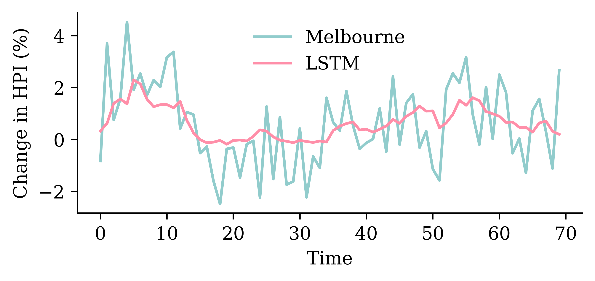
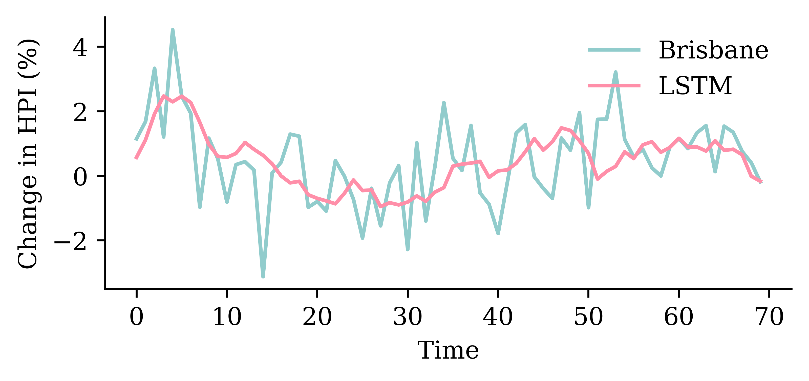
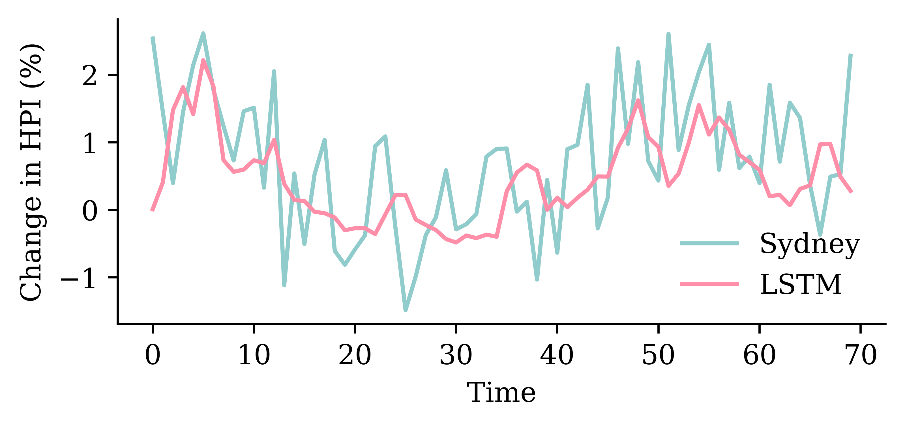
A GRU layer
random.seed(1)
model_gru = Sequential([
Input((seq_length, num_ts)),
GRU(50),
Dense(num_ts, activation="linear")
])
model_gru.compile(loss="mse", optimizer="adam")
es = EarlyStopping(patience=50, restore_best_weights=True, verbose=1)
%time hist = model_gru.fit(X_train, y_train, epochs=1_000, \
validation_data=(X_val, y_val), callbacks=[es], verbose=0)Epoch 70: early stopping
Restoring model weights from the end of the best epoch: 20.
CPU times: user 5.23 s, sys: 508 ms, total: 5.74 s
Wall time: 3.95 sAssess the fits

Plotting the predictions

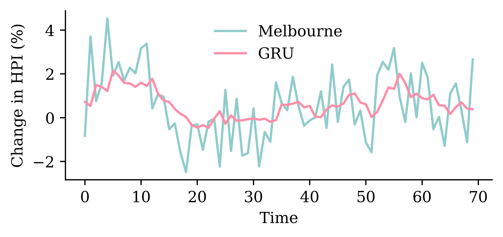
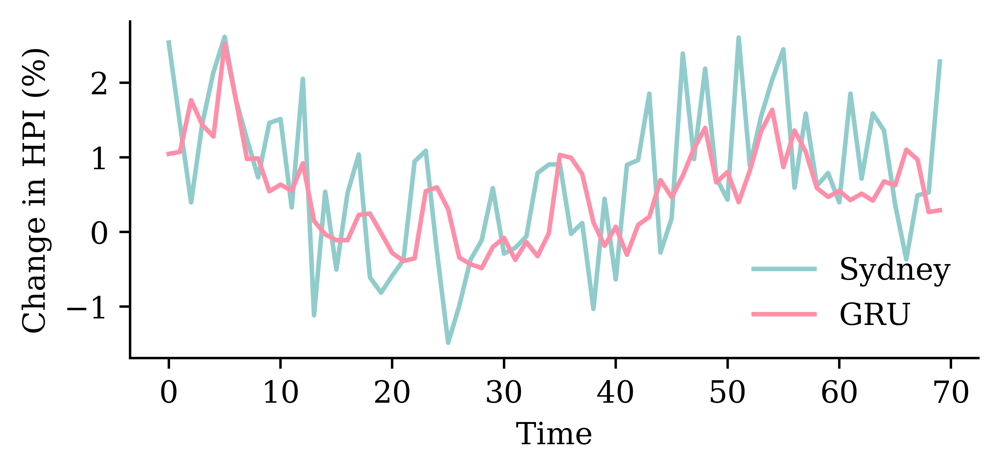
Two GRU layers
random.seed(1)
model_two_grus = Sequential([
Input((seq_length, num_ts)),
GRU(50, return_sequences=True),
GRU(50),
Dense(num_ts, activation="linear")
])
model_two_grus.compile(loss="mse", optimizer="adam")
es = EarlyStopping(patience=50, restore_best_weights=True, verbose=1)
%time hist = model_two_grus.fit(X_train, y_train, epochs=1_000, \
validation_data=(X_val, y_val), callbacks=[es], verbose=0)Epoch 67: early stopping
Restoring model weights from the end of the best epoch: 17.
CPU times: user 7.75 s, sys: 777 ms, total: 8.53 s
Wall time: 5.25 sAssess the fits
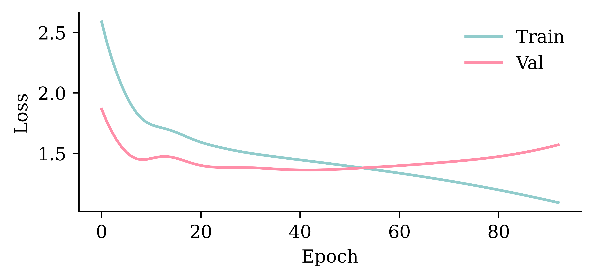Plotting the predictions

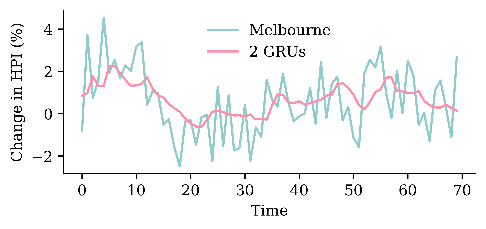
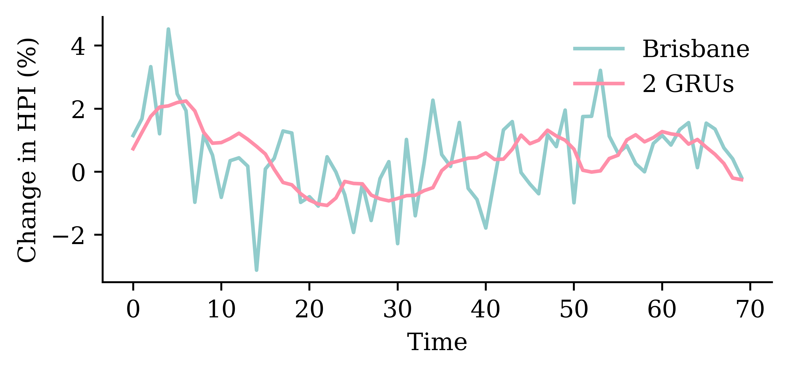
Compare the models
| Model | MSE | |
|---|---|---|
| 1 | SimpleRNN | 1.491682 |
| 0 | Dense | 1.429465 |
| 4 | 2 GRUs | 1.358651 |
| 3 | GRU | 1.344503 |
| 2 | LSTM | 1.331125 |
The network with an LSTM layer is the best.
Test set

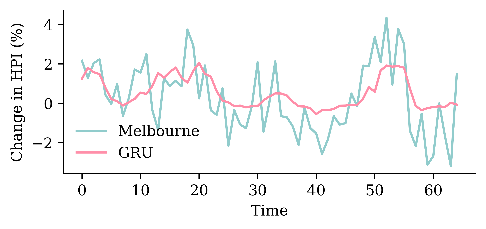

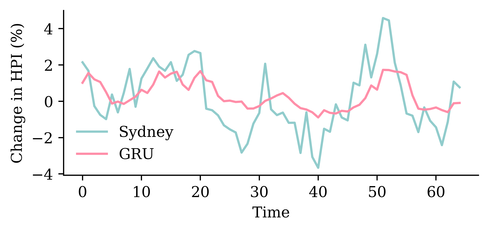
Package Versions
from watermark import watermark
print(watermark(python=True, packages="keras,matplotlib,numpy,pandas,seaborn,scipy,torch,tensorflow,tf_keras"))Python implementation: CPython
Python version : 3.11.9
IPython version : 8.24.0
keras : 3.3.3
matplotlib: 3.9.0
numpy : 1.26.4
pandas : 2.2.2
seaborn : 0.13.2
scipy : 1.11.0
torch : 2.0.1
tensorflow: 2.16.1
tf_keras : 2.16.0
Glossary
- GRU
- LSTM
- recurrent neural networks
- SimpleRNN